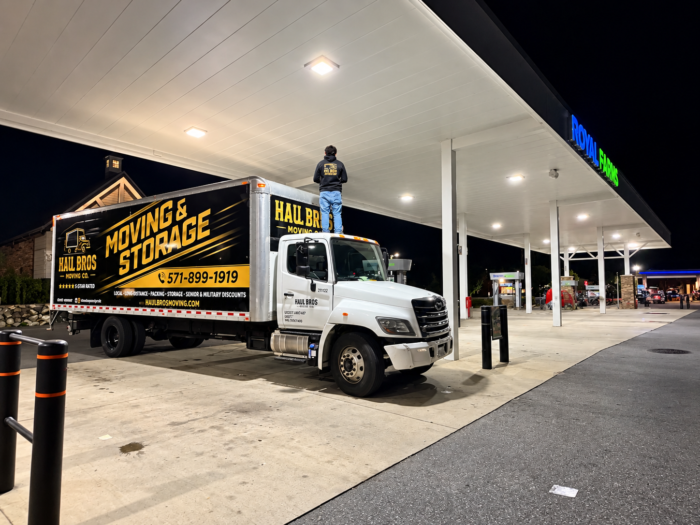

Updated October 2026 | 2027 Relocation Guide
Are you thinking about moving to Lorton, Virginia?
Located in southern Fairfax County, Lorton offers a combination of established neighborhoods, newer residential communities, outdoor recreation, and convenient access to major Northern Virginia destinations.
For people working near Fort Belvoir, Springfield, Alexandria, Fairfax, or Washington, DC, Lorton can be an appealing place to consider.
But before relocating, it's important to understand local housing prices, rental options, school boundaries, transportation, and moving expenses.
At Haul Bros Moving Co LLC, we provide residential moving, packing, labor-only loading and unloading, and other qualifying moving services throughout Lorton and surrounding Northern Virginia communities.
This complete 2027 guide covers everything you need to know before making Lorton your new home.
Quick Answer: Is Lorton, VA a Good Place to Live in 2027?
Lorton can be a good choice for people seeking a suburban community in Fairfax County with access to parks, regional transportation, and nearby employment centers.
The area offers apartments, townhouses, condominiums, and detached homes.
Housing costs are substantial, however, and commuting conditions vary depending on the destination and time of day.
Lorton at a Glance
| Category | What to Know |
|---|---|
| Location | Southern Fairfax County, Virginia |
| Main ZIP code | 22079 |
| Housing options | Apartments, townhouses, condominiums, detached homes |
| Typical home value | Approximately $646,825, September 2026 Zillow data |
| Average asking rent | Approximately $2,562/month, September 2026 Zillow rent index |
| Public schools | Fairfax County Public Schools |
| Transportation | Interstate 95, Route 1, Route 123, Virginia Railway Express |
| Nearby communities | Springfield, Newington, Fairfax Station, Woodbridge |
| Local attractions | Workhouse Arts Center, Laurel Hill Park, Occoquan Regional Park |
Housing statistics are dated reference points, not forecasts for 2027. Prices for individual properties can vary substantially.
1. Where Is Lorton, Virginia?
Lorton is an unincorporated community in southern Fairfax County.
It is located south of Springfield and near the Prince William County boundary.
Its location gives residents access to several important Northern Virginia destinations.
Nearby Areas
Springfield: A regional center for shopping, employment, and transportation connections.
Fort Belvoir: A major military installation located northeast of Lorton.
Woodbridge: A neighboring Prince William County community with shopping, housing, and employment options.
Fairfax Station: An area with established residential neighborhoods and larger properties.
Alexandria: A major regional employment and residential destination.
Major Roads
Lorton is served by or located near:
- Interstate 95.
- Richmond Highway (Route 1).
- Lorton Road.
- Ox Road (Route 123).
- Fairfax County Parkway.
- Interstate 495 via regional connections.
The exact commute depends on the property address and destination.
2. Best Neighborhoods and Communities in Lorton, VA
Lorton has several distinct residential areas.
The best choice depends on your budget, desired home size, commuting needs, and preferred lifestyle.
Laurel Hill
Laurel Hill is one of the area's best-known residential and recreational districts.
The broader area includes residential communities, parkland, and the historic Workhouse campus.
Why consider Laurel Hill?
- Residential neighborhoods.
- Nearby parks and trails.
- Access to local recreation.
- Different housing types.
Moving tip: Confirm townhouse staircases, driveway access, and HOA parking rules before scheduling your move.
Lorton Station
Lorton Station is a residential area associated with the nearby Virginia Railway Express station.
It can appeal to people who want access to regional commuter rail.
Why consider Lorton Station?
- Proximity to commuter transportation.
- Townhouse and other residential options.
- Access to nearby services.
Moving tip: Some residential properties may have shared parking areas or limited loading access.
Gunston Corner
Gunston Corner is another residential area worth researching when comparing Lorton housing options.
Available property types and prices depend on current listings.
Why consider the area?
- Residential setting.
- Access to nearby shopping and roads.
- Opportunities to compare housing layouts.
Moving tip: Check the number of floors, staircases, and available parking spaces.
South County and Surrounding Residential Areas
The broader South County area includes several neighborhoods with detached homes and townhouses.
Why consider South County?
- Established residential communities.
- Access to parks.
- Different property sizes.
- Proximity to regional roads.
Moving tip: Large households should request an inventory review to determine truck capacity and crew requirements.
Areas Near Mason Neck
The southeastern portion of the Lorton area provides access to natural attractions and residential communities.
Some properties may have longer driveways or more secluded access.
Moving tip: Share driveway dimensions, access restrictions, and any unusual road conditions before moving day.
How to Choose the Right Neighborhood
Compare the exact property, not just the neighborhood name.
Review:
- Housing costs.
- Property size.
- School assignments.
- Commute.
- HOA fees.
- Parking.
- Nearby amenities.
- Future construction.
- Moving truck access.
3. How Much Do Homes Cost in Lorton, VA?
Housing prices vary based on property type, size, condition, and location.
According to Zillow's September 30, 2026 reporting, Lorton's typical home value was approximately $646,825.
Zillow also reported a median sale price of approximately $613,333 for August 2026.
These statistics measure different aspects of the housing market and should not be treated as identical.
Housing Options in Lorton
| Property Type | Considerations |
|---|---|
| Condominium | Association fees, building rules, shared amenities |
| Townhouse | Multiple floors, parking, HOA restrictions |
| Older detached home | Maintenance, renovation needs, driveway access |
| Updated detached home | Renovation quality, lot size, property condition |
| New construction | Builder timelines, new finishes, occupancy requirements |
What Affects Home Prices?
- Number of bedrooms.
- Square footage.
- Lot size.
- Property condition.
- Recent renovations.
- Garage and parking.
- Neighborhood.
- Market inventory.
- Proximity to regional transportation.
Is Lorton More Affordable Than Vienna?
Zillow's September 2026 home-value reporting placed Lorton's typical home value below Vienna's.
However, individual properties may overlap considerably in price.
Compare similar property types rather than assuming every Lorton home is cheaper than every Vienna home.
4. How Much Does It Cost to Rent in Lorton?
Lorton offers rental apartments, townhouses, condominiums, and detached homes.
Zillow's September 2026 observed rent index indicated average asking rent of approximately $2,562 per month.
That figure is a market-level estimate and does not represent the rent for every property.
Rental Costs to Consider
Beyond monthly rent, review:
- Security deposit.
- Parking charges.
- Pet fees.
- Utility costs.
- Application fees.
- Move-in fees.
- Storage fees.
- Lease terms.
Renting an Apartment
Ask whether the building requires:
- Elevator reservations.
- Moving-day scheduling.
- Loading-dock reservations.
- Certificates of insurance.
- Parking authorization.
Renting a Townhouse
Check the number of levels, parking availability, and HOA rules.
Renting a Detached Home
Clarify maintenance responsibilities, landscaping, utilities, and lease termination conditions.
5. Cost of Living in Lorton, Virginia
Housing is a major part of the cost of living in Lorton.
Other recurring expenses may include:
- Electricity.
- Water and sewer.
- Internet.
- Groceries.
- Vehicle ownership.
- Commuting.
- Childcare.
- Insurance.
- HOA or condominium fees.
- Property maintenance.
Property Taxes
Lorton is part of Fairfax County.
Property owners should review Fairfax County's current real estate tax rate, property assessment, and applicable district charges.
A property's assessed value and actual purchase price may differ.
Transportation Costs
Households commuting by car should account for fuel, maintenance, parking, tolls, and time spent traveling.
Those using commuter rail should review current fares, station parking, and connecting transportation.
6. Schools in Lorton, VA
Lorton-area public schools are part of Fairfax County Public Schools (FCPS).
Schools associated with the broader area include:
- Lorton Station Elementary School.
- Laurel Hill Elementary School.
- Gunston Elementary School.
- Halley Elementary School.
- South County Middle School.
- South County High School.
Not every address is assigned to these schools.
Important 2027 School Boundary Update
As of October 2026, FCPS was conducting an additional boundary study involving Gunston, Halley, Laurel Hill, and Lorton Station elementary school communities.
Recommendations were scheduled for January 2027.
Families planning a 2027 move should verify the latest approved boundaries before making a housing decision.
How to Check Your School Assignment
Use the official FCPS address-based boundary tools.
Enter the exact property address and confirm the applicable school year.
7. Commuting From Lorton to Washington, DC, Fort Belvoir, and Springfield
Lorton's transportation connections are important for many households.
Driving to Washington, DC
Interstate 95 and connecting highways provide regional access, but traffic can be significant during peak periods.
Commuting to Fort Belvoir
Lorton may be a practical location for people working at Fort Belvoir.
However, installation access points, security procedures, and traffic conditions can affect the commute.
Commuting to Springfield
Springfield is relatively close to Lorton and offers connections to regional employment and shopping.
Commuting to Alexandria
Route 1 and Interstate 95 provide options, depending on the destination.
Virginia Railway Express
Lorton has a VRE station on the Fredericksburg Line.
This can provide a rail alternative for some commuters traveling toward Alexandria and Washington, DC.
Check current VRE schedules, fares, and station parking before making commuting plans.
Is Lorton Good for Remote Workers?
Lorton offers a range of residential properties that may accommodate home offices.
Confirm internet availability and service quality at the exact address.
8. Things to Do in Lorton, VA
Lorton has access to several recreational and cultural destinations.
Workhouse Arts Center
The Workhouse Arts Center occupies part of a historic former correctional facility campus.
It provides arts programming, exhibitions, and cultural activities.
Laurel Hill Park
Laurel Hill offers open space and recreational opportunities.
Occoquan Regional Park
Located along the Occoquan River, Occoquan Regional Park provides outdoor recreation and scenic surroundings.
Mason Neck State Park
Mason Neck State Park offers trails, wildlife viewing, and outdoor activities.
Pohick Bay Regional Park
Pohick Bay provides access to outdoor recreation in the broader Lorton area.
Historic Occoquan
Nearby Occoquan offers local shops, restaurants, and a historic waterfront setting.
Check current hours, fees, and availability before visiting.
9. Is Lorton, VA a Good Place for Families?
Lorton may appeal to families looking for residential space, parks, and access to Fairfax County services.
Factors to Evaluate
Schools: Confirm current assignments and boundary changes.
Housing: Compare bedrooms, layout, outdoor space, and affordability.
Childcare: Research providers and availability.
Commuting: Evaluate actual travel times.
Recreation: Consider parks, trails, and community programs.
Budget: Account for housing, transportation, and recurring expenses.
Every family's priorities are different, so visit potential neighborhoods and compare specific properties.
10. Moving to Lorton From Woodbridge, Springfield, Alexandria, or Fairfax
Moving logistics vary depending on the starting location and property type.
Moving From Woodbridge to Lorton
A relatively short regional move still requires loading, transportation, and unloading.
Traffic, stairs, and inventory can affect the duration.
Moving From Springfield to Lorton
Confirm the property access conditions and any building rules.
Moving From Alexandria to Lorton
Apartment and condominium moves may require elevator reservations and parking coordination.
Moving From Fairfax to Lorton
Large furniture and longer travel distances should be included in the estimate.
Moving From Arlington to Lorton
If moving from a high-rise building, confirm elevator availability and loading-dock rules.
Moving From Stafford to Lorton
Plan for travel along the Interstate 95 corridor and account for the full household inventory.

11. How Much Do Movers Cost in Lorton, VA?
Haul Bros Moving Co LLC offers the following standard local moving packages for qualifying moves.
| Moving Package | First 2 Hours | Additional Hour |
|---|---|---|
| 2 Movers + Truck | $395 | $159 |
| 3 Movers + Truck | $495 | $189 |
| 4 Movers + Truck | $695 | $249 |
| 2 Movers — Labor Only | $295 | $125 |
A two-hour minimum applies.
These are Haul Bros' stated standard rates, not independent regional market averages.
Actual moving costs depend on the inventory, distance, access conditions, crew size, and additional services.
Example 1: One-Bedroom Apartment Move
A customer moves from Springfield to a one-bedroom apartment in Lorton.
Assume two movers and a truck complete the job in four hours.
First two hours: $395.
Two additional hours: $318.
Illustrative total: $713.
Example 2: Two-Bedroom Townhouse Move
A customer moves from Woodbridge to a townhouse in Lorton.
Assume three movers and a truck complete the job in five hours.
First two hours: $495.
Three additional hours: $567.
Illustrative total: $1,062.
Example 3: Four-Bedroom Single-Family Home
A family moves from Fairfax to a detached home in Lorton.
Assume four movers and a truck complete the job in eight hours.
First two hours: $695.
Six additional hours: $1,494.
Illustrative total: $2,189.
These calculations assume one standard truck package and no separately quoted services.
Larger households may require additional truck capacity, crew members, or time.
12. Labor-Only Movers in Lorton, VA
Some customers already have a rental truck, portable storage container, or other transportation.
Labor-only moving assistance can help with the physical loading and unloading.
What Can Labor-Only Movers Help With?
- Loading U-Haul trucks.
- Unloading Penske trucks.
- Loading or unloading PODS containers.
- Moving furniture into storage.
- Unloading household goods.
- Carrying qualifying furniture upstairs.
Haul Bros Labor-Only Pricing
Two movers: $295 for the first two hours and $125 for each additional hour.
| Duration | Illustrative Total |
|---|---|
| 2 hours | $295 |
| 3 hours | $420 |
| 4 hours | $545 |
| 5 hours | $670 |
| 6 hours | $795 |
These examples assume the standard two-mover labor-only service without additional charges for separately quoted services.
When Is Labor-Only Moving a Good Option?
It may be suitable if you already have a rental truck, are using a storage container, or need help loading and unloading without a company-provided truck.
13. Moving Into a Lorton Townhouse
Townhouses are an important part of Lorton's housing market.
They can present challenges because of multiple floors, staircases, and limited parking.
Townhouse Moving Checklist
- Measure large furniture.
- Confirm the number of staircases.
- Check garage and driveway access.
- Review HOA rules.
- Identify a legal truck parking location.
- Label boxes by floor.
- Discuss furniture disassembly in advance. See our townhouse moving guide.
Haul Bros includes qualifying furniture disassembly and reassembly in standard local moving packages.
14. Moving Into a Lorton Apartment or Condominium
Apartment moves often require advance coordination.
Questions to Ask Property Management
- Is an elevator reservation required?
- Are there designated moving hours?
- Is a loading dock available?
- Where can the moving truck park?
- Is a certificate of insurance required?
- Are there move-in fees?
- Is a building inspection required?
Tips for Apartment Moving
Pack boxes before the crew arrives, reserve building access, and provide accurate furniture measurements.
These steps can reduce delays and unnecessary handling.
15. Moving Into a New Construction Home in Lorton
Some Lorton-area properties include newer construction or recently completed homes.
Moving into a new home requires special attention to property protection and closing schedules.
Before Moving In
- Confirm closing and possession.
- Verify the required occupancy approvals.
- Complete the builder walkthrough.
- Document existing damage.
- Protect new flooring.
- Confirm truck access.
- Measure large furniture.
- Check utility activation.
If your closing date may change, discuss rescheduling terms before booking.
16. Best Time of Year to Move to Lorton
Every season has advantages and challenges.
Spring
Moderate temperatures can be comfortable for moving, although rain may affect conditions.
Summer
Many households move during summer, especially when coordinating school calendars.
Book early when possible.
Fall
Fall may provide comfortable temperatures for loading and unloading.
Winter
Winter moves require attention to ice, snow, road conditions, and shorter daylight hours.
Weekday or Weekend?
Choose based on availability, your work schedule, building rules, and the moving company's actual pricing.
17. Complete 2027 Moving to Lorton Checklist
Six to Eight Weeks Before Moving
- Confirm your new address.
- Create a furniture inventory.
- Research moving companies.
- Request estimates.
- Review school boundaries.
- Begin decluttering.
Four Weeks Before
- Reserve your moving date.
- Arrange packing supplies or professional packing services.
- Review HOA or building requirements.
- Schedule utility services.
- Begin packing nonessential items.
Two Weeks Before
- Confirm truck parking.
- Label boxes.
- Arrange elevator access if applicable.
- Prepare an essentials bag.
- Reconfirm moving details.
One Week Before
- Complete packing.
- Confirm the crew's arrival window.
- Review the moving estimate.
- Prepare large furniture.
- Keep important documents accessible.
Moving Day
- Clear walkways.
- Protect flooring.
- Direct furniture placement.
- Keep pets and children away from loading areas.
- Inspect both properties.
After Moving
- Update your mailing address.
- Confirm utility accounts.
- Review trash and recycling procedures.
- Complete any required local registrations.
- Explore your new neighborhood.
18. Frequently Asked Questions About Moving to Lorton, VA
1. Is Lorton, VA a good place to live?
Lorton offers suburban neighborhoods, parks, transportation connections, and access to Fairfax County services. Whether it is suitable depends on your budget and priorities.
2. Is Lorton part of Fairfax County?
Yes. Lorton is an unincorporated community in Fairfax County, Virginia.
3. Is Lorton expensive?
Housing costs are relatively high compared with many parts of Virginia, although they vary by property type and location.
4. What is the average home price in Lorton?
Zillow reported a typical home value of approximately $646,825 in September 2026. This is not the price of every home or a 2027 forecast.
5. How much is rent in Lorton?
Zillow's September 2026 observed rent index indicated approximately $2,562 per month. Actual listings vary.
6. What are the best neighborhoods in Lorton?
Laurel Hill, Lorton Station, Gunston Corner, and surrounding South County residential areas are useful places to research.
7. Is Lorton close to Fort Belvoir?
Yes. Lorton is located near Fort Belvoir, although commute times depend on the specific addresses and installation entrance.
8. Does Lorton have a train station?
Yes. The Lorton VRE station provides access to the Fredericksburg Line.
9. Is Lorton good for families?
Lorton has residential neighborhoods, parks, and Fairfax County services that may appeal to families. Individual housing and school needs should guide the decision.
10. What schools serve Lorton?
Several Fairfax County Public Schools serve the area. Assignments vary by address and may change.
11. Are school boundaries changing in Lorton?
As of October 2026, FCPS was conducting an additional boundary study affecting several Lorton-area elementary school communities, with recommendations expected in January 2027.
12. How far is Lorton from Washington, DC?
Driving distance depends on the specific starting and ending addresses. Commuting conditions vary significantly.
13. Is Lorton close to Woodbridge?
Yes. Lorton and Woodbridge are neighboring Northern Virginia communities.
14. How much do movers cost in Lorton?
Haul Bros' standard two-mover truck package begins at $395 for the first two hours, plus $159 per additional hour.
15. How much do labor-only movers cost in Lorton?
Haul Bros' standard two-mover labor-only package costs $295 for the first two hours and $125 per additional hour.
16. Can Haul Bros move me from Woodbridge to Lorton?
Yes. Haul Bros serves both communities and surrounding Northern Virginia areas.
17. Does Haul Bros offer packing services in Lorton?
Yes. Full and partial packing assistance is available for qualifying moves.
18. Can movers help with Lorton townhouses?
Yes. Haul Bros provides qualifying townhouse moving services, including loading, unloading, and routine furniture disassembly and reassembly.
19. Do Lorton apartments require elevator reservations?
Some do. Confirm the requirements directly with property management.
20. How do I request a moving quote for Lorton?
Provide your moving date, addresses, inventory, access conditions, and requested services.
19. Why Choose Haul Bros Moving Co LLC for Your Lorton Move?
Moving to Lorton requires planning, especially when relocating into a townhouse, apartment, condominium, or larger single-family home.
Haul Bros Moving Co LLC is a Woodbridge-based moving company serving Lorton and surrounding Northern Virginia communities.
Our Moving Services
- Local residential moving.
- Apartment moving.
- Townhouse moving.
- Single-family home moving.
- Packing and unpacking.
- Labor-only loading and unloading.
- Furniture disassembly and reassembly.
- Storage-related moving assistance.
- Senior moving.
- Military moving assistance.
- Specialty-item moving assessments.
- Junk removal.
What's Included in Standard Local Moving Packages?
Depending on the agreed package:
- Professional moving crew.
- Moving truck.
- Furniture blankets.
- Shrink wrap for suitable furniture.
- Dollies and routine moving equipment.
- Basic floor protection.
- Qualifying furniture disassembly and reassembly.
- Loading and unloading.
For qualifying local moves, Haul Bros does not impose separate standard fuel, stair, elevator, or routine equipment fees. Additional working time and separately quoted services may affect the total.
Available Discounts
Eligible military members, seniors, and students may receive a 5% discount, subject to applicable terms.
20. Request a Free Moving Quote in Lorton, VA
Are you planning to move to Lorton from Woodbridge, Springfield, Alexandria, Fairfax, Stafford, or another Northern Virginia community?
Haul Bros Moving Co LLC can help you plan your relocation.
Whether you need a moving crew and truck, packing assistance, or labor-only unloading, we offer services for different household sizes and moving requirements.
Contact Haul Bros Moving Co LLC
Haul Bros Moving Co LLC
*Relocating made easy.*
Phone: (571) 899-1919
Email: info@haulbrosmoving.com
Website: https://www.haulbrosmoving.com
USDOT: 4497497
Request Your Personalized Estimate
Please provide:
- Preferred moving date.
- Pickup address.
- Lorton delivery address.
- Home size.
- Furniture and box inventory.
- Number of floors.
- Stairs or elevator information.
- Parking and truck access details.
- Packing or specialty-item requirements.
- Whether you need a truck or labor-only service.
Contact Haul Bros Moving Co LLC today for a free, personalized moving estimate in Lorton, VA.
Final Thoughts: Is Moving to Lorton Worth It?
Lorton offers a combination of suburban housing, outdoor recreation, transportation options, and access to Northern Virginia employment centers.
Its location near Springfield, Woodbridge, and Fort Belvoir makes it worth considering for people who want to remain connected to the Washington metropolitan region.
Before moving, compare housing costs, school assignments, commuting needs, and neighborhood amenities.
Once you've selected your new home, an organized moving plan can help make the transition easier.
Haul Bros Moving Co LLC — Relocating made easy.
*Housing figures reflect published 2026 data and are not forecasts for 2027. Moving prices are illustrative calculations based on Haul Bros' stated rates and are subject to the final agreed service scope.*